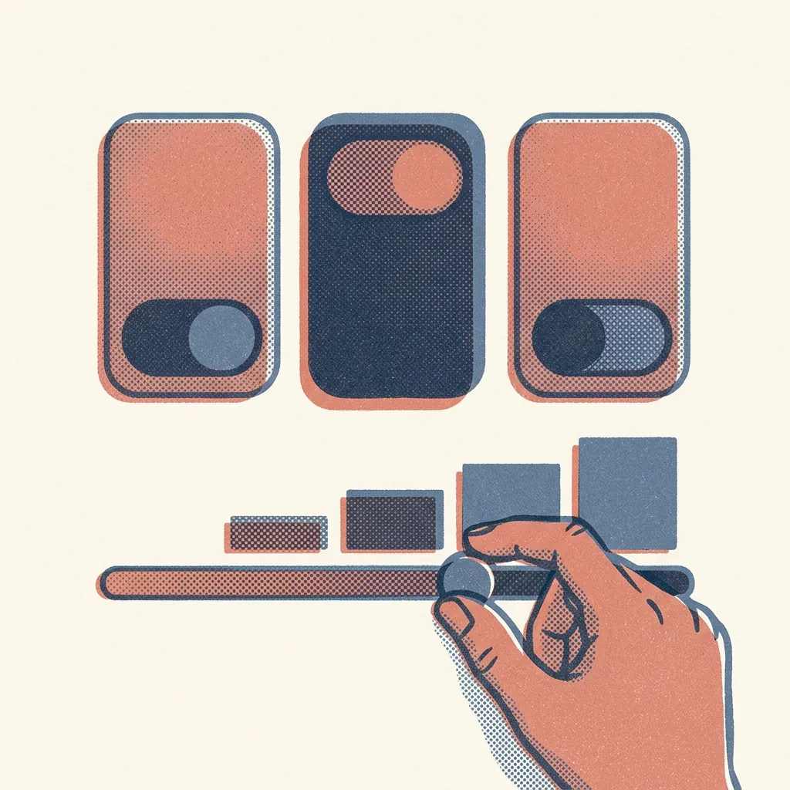
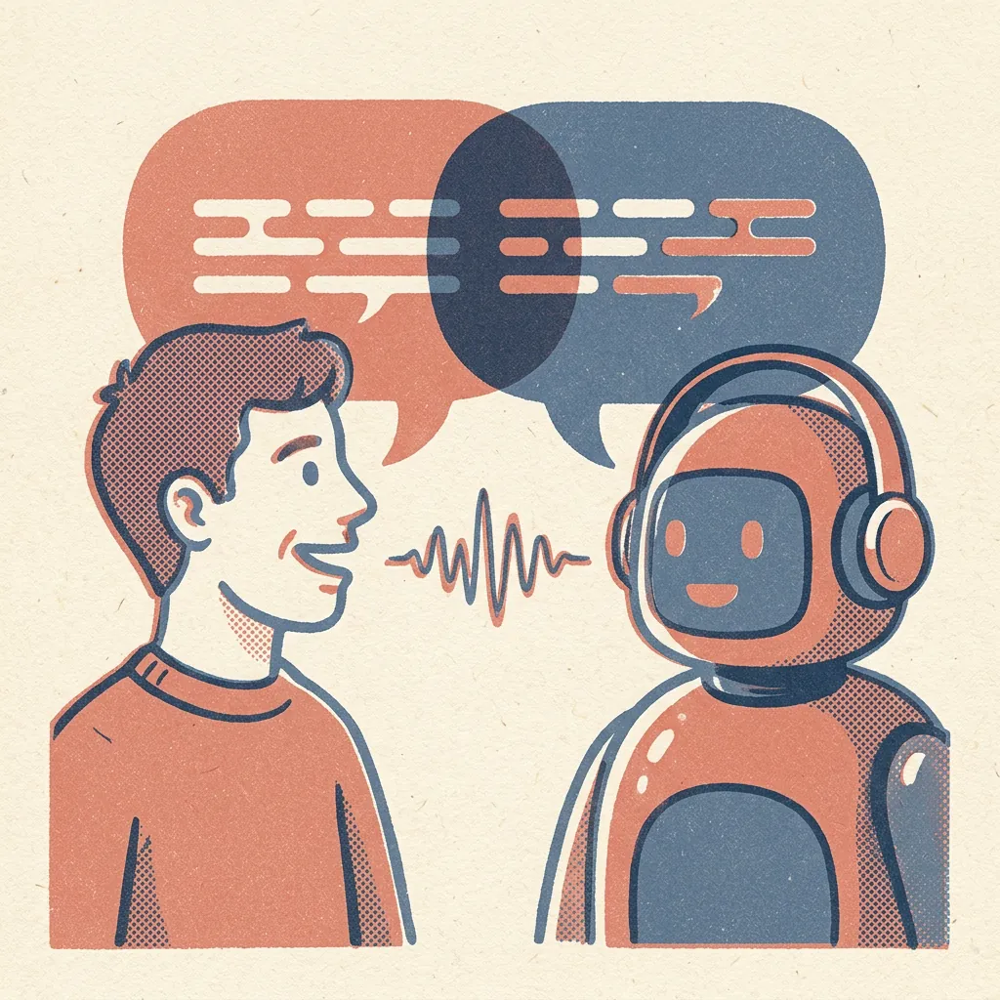

毎日届く最新ニュース
世界の英字ニュースの最新記事を題材に。時事ネタで、実際に使える語彙と表現が身につきます。
毎日の英字ニュースを題材に、AIとディスカッション。読むだけで終わらない、「話せる」英語学習をはじめましょう。
メールアドレスだけで登録できます。クレジットカード不要。
インプットからアウトプットまで、ひとつのアプリで完結します。
世界の英字ニュースの最新記事を題材に。時事ネタで、実際に使える語彙と表現が身につきます。
ディスカッション・ファシリテーション・インタビューの3モード。レベルに合わせてAIが問いかけます。
マイクで話して、そのまま回答。シャドーイングで発音とリズムも鍛えられます。
セッションごとのスコア、連続学習日数、保存した単語をいつでも振り返れます。
登録したらすぐに、今日のニュースで話しはじめられます。
興味のあるニュースから

初級〜上級まで対応

あなたの意見にAIが問いかけます
スコアと改善ポイントで次につなげる
デザイン案プレビュー
9つのカテゴリーから選べます。カードにカーソルを合わせるとプレビューが再生されます。
はい。メールアドレスで登録するだけで、すべての練習モードを無料でお使いいただけます。
レベルを初級・中級・上級から選べます。初級ではAIがやさしい表現でゆっくり問いかけるので、安心して始められます。
主要・国内・国際・経済・エンタメ・スポーツ・IT・科学・ライフの9カテゴリーに加え、キーワード検索で好きなトピックの記事を選べます。
マイク付きの端末と、音声認識に対応したブラウザ（Chrome など）があれば利用できます。キーボード入力でも練習できます。
下のお問い合わせフォームから、登録したメールアドレスを添えてご連絡ください。
ご質問・ご要望・不具合のご報告など、お気軽にお送りください。
登録は30秒。すぐに最初のセッションを始められます。
ログインして、今日のニュースで練習を続けましょう。
アカウントをお持ちでない方は
メール内のリンクをクリックして登録を完了してください。完了後、こちらからログインできます。
β版として無料で公開中です。使ってみた感想や不具合を、ぜひお聞かせください。
これから参加するプロジェクトや会議、面接など、自分の状況を題材にディスカッション・ファシリテーション・面接の練習ができます。
最近使った題材
HISTORY
これまでの練習の記録とスコアの推移です。
REVIEW
単語帳に登録した表現です。復習タイミングが来た語彙は、次の練習で自動的に出題されます。
SPEAKER
AIの話し相手の性別・発音・年齢を選べます。読み上げの声とAIの話し方（語彙・表現）の両方に反映され、アカウントに保存されます。
このブラウザは音声読み上げに対応していません。Chrome / Safari / Edge の最新版をお使いください。
スクロール（または上下キー）で年齢を選びます。
HOW TO USE
ScooPitchは、世界のニュースを題材にAIと英語で話しながら、「話す・聞く・語彙」をまとめて鍛えるアプリです。効果を最大にするための使い方を紹介します。
時事ニュースについて「意見→理由→具体例」の順で話す練習を重ね、考えを筋道立てて伝えられるようになります。
AIの問いかけにすぐ答えることで、頭の中で日本語に訳さず、英語のまま反応する力がつきます。
シャドーイングで、リスニングの「音声知覚（音が聞き取れる力）」を鍛えられます。
実際のニュースに出てくる表現を、単語帳と復習の仕組みで「知っている」から「使える」語彙に変えていきます。
アメリカ・イギリス・オーストラリア・インドなど、さまざまな話者の英語に慣れ、実際の会議や旅行で聞き取れる耳を作ります。
ファシリテーションと面接スピーチのモードで、司会進行や受け答えの型と定番表現を身につけます。
STEP 1
ホーム画面のカテゴリー、若しくは希望する記事のキーワードを入力して練習を始めます。「記事の要約を見る」で概要と論点を確認しましょう。背景をもっと知りたいときは「記事の全文を見る」で元の記事を開けます。読み込みすぎず、話す時間を多く取るのがコツです。
STEP 2
AIの質問に答え、画面上部のゴールバー（7ステップ）を満たすことを目指します。1回の発言は2〜3文以上が目安です。極力マイクで話すようにしましょう。言い直しても構いません。
STEP 3
AIの返答の「Shadowing」ボタンを押すと、文字が隠れて読み上げが始まります。聞こえた音を少し遅れて追いかけるように声に出してください。終わると文字が戻るので、聞き取れなかった部分を確認し、もう一度繰り返します。使ってみたい表現は、文中を選択して「＋単語帳」で保存しましょう。
STEP 4
「終了」を押すとスコア画面が開きます。まず「今日のベストフレーズ」を1回、次に「改善すべき表現」のより良い言い方を3回ずつ音読します。正しい形を口で覚えることで、次の会話で自然に出てくるようになります。
通勤中や朝食後など、時間を決めると習慣になります。ホームの「連続学習」が途切れそうなときはお知らせが出ます。短い時間でも、休まないことを優先してください。
ホームに出る「昨日の記事でもう一度練習しますか？」を使うと、同じ話題を翌日もう一度話せます。2回目は使う語彙が増え、格段に滑らかになります。週に2回ほど取り入れるのがおすすめです。
単語帳の語句は、復習のタイミングが来ると次の会話の画面上部に「復習語彙」として表示されます。会話の中で意識して使うと✓が付き、次の復習日が自動で延びていきます（3日後→7日後→14日後…）。
スコアが70点以上で3回続いたら、レベルを1段階上げてみましょう。少し難しいと感じるくらいが、いちばん伸びる負荷です。
「スピーカー設定」でAIの話者のアクセント・性別・年齢を変えられます。週ごとに変えると、実際の会議や旅行で出会う英語に強くなります（選べる声はお使いの端末によって異なります）。
| 月・水・金 | ディスカッション |
|---|---|
| 火 | 面接スピーチ |
| 木 | ファシリテーション |
| 土 | 「昨日の記事でもう一度」＋「復習ポイント一覧」で単語の見直し |
| 日 | お休み。「学習履歴」でスコアの推移を眺めて、1週間の成長を確認 |
PLAN
Pro にすると、AIとの会話・採点・高品質な音声を、回数を気にせず使えます。
| 機能 | 無料 | Pro |
|---|---|---|
| AIとの会話 | 1日1往復 | 1日60回まで |
| 翻訳 | その日の会話の分だけ | ✓ |
| 採点・改善ポイント | — | ✓ |
| 読み上げの音声 | ブラウザの音声 | 高品質な Azure の音声（地域・性別・年齢を反映） |
| 自分の題材で練習 | 1日1往復の範囲で | ✓ |
お支払いは Stripe の画面で行います。カード情報は ScooPitch には保存されません。
ACCOUNT
ログイン情報の確認とパスワードの変更ができます。
—
この端末に保存されている学習履歴・単語帳・連続学習日数を削除します。この操作は取り消せません。
アカウントと、保存されている学習履歴・単語帳・設定をすべて削除します。Pro の契約がある場合は解約されます（残りの期間の返金はありません）。この操作は取り消せません。